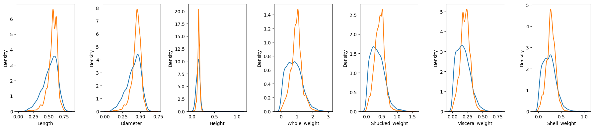

Be GReaT
I came across an article (1) titled ‘Language Models are Realistic Tabular Data Generators’ which argues just that. The process is something like
- Convert your tabular data into sentences;
- Fine tune a large language model on those sentences;
- Ask it to generate new ones.
I found this fairly interesting and decided to test the process. I might have set my expectations too high but I got really excited about the idea of a language model as a data-augmentation strategy. The authors have also made their code open source and the API is pretty straightforward.
For my experiment I loaded the abalone dataset, which contains the sex and spatial and weight measurements of ~4000 snails. 1000 samples are set aside for validation data (although as we never even get to use it.)
data = fetch_openml(name='abalone', version=1, parser="auto")
x = data.data
x['Sex'] = x['Sex'].astype('category').cat.codes # label encoding.
y = data.target.astype(float)
data = x
data['Rings'] = y
data_train, data_test = train_test_split(data, train_size=3000, random_state=420)
The plan is to train and validate a regression model on the original data, then on a dataset containing the original 3000 samples augmented by the same number of synthetic samples. Hopefully the model trained on the extra data will have greater predictive power on unseen data. As mentioned, the API is simple:
great = be_great.GReaT("distilgpt2",
epochs=30,
save_steps=2000,
logging_steps=500,
experiment_dir="trainer_abalone",
batch_size=16)
trainer = great.fit(data_train)
synthetic_data = great.sample(3000)
Unfortunately the univariate densities are pretty terrible imitations of the originals though, so bad that I’m calling it quits here. Maybe a larger model would do better but actually now I think I must have been dreaming if I thought this could be used for meaningful data augmentation!

Even though this didn’t really work it’s been fun to play with an experimental library and maybe it could be useful for other things, like generating a big dataset for development purposes before the real one becomes available.
Refs: